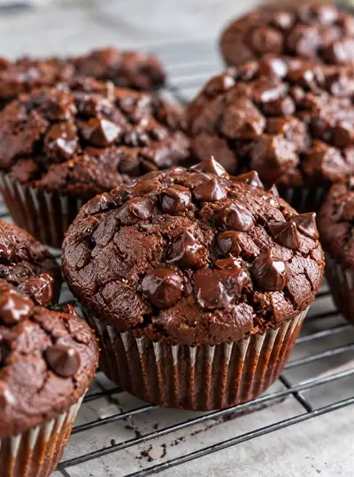

Chocolate Sweet Potato Muffins

Ingredients
- 1 cup (250g) roasted sweet potato, mashed
- 1 ripe banana (about 120g)
- 2 large eggs
- 1 tsp vanilla extract
- 1 tbsp maple syrup (optional for a sweeter muffin)
- ½ cup (50–55g) oat flour
- ¼ cup (30g) unsweetened cocoa powder
- 1 tsp baking powder
- ½ tsp baking soda
- ¼ tsp salt
- ⅓ cup (60g) dark chocolate chips or chunks
Steps
- Preheat your oven to 350°F and line a muffin pan with 8 liners.
- Add the sweet potato, banana, eggs, vanilla, and optional maple syrup to a blender. Blend until completely smooth.
- Transfer to a bowl and stir in the oat flour, cocoa powder, baking powder, baking soda, and salt until just combined.
- Fold in the dark chocolate chips, reserving a few for the tops.
- Divide the batter evenly between 8 muffin cups and sprinkle the reserved chocolate on top.
- Bake for 18–22 minutes, until the tops are set and a toothpick inserted into the center comes out with a few moist crumbs.
- Let the muffins cool completely.
- Melt the dark chocolate with the coconut oil until smooth. Spoon or drizzle a thin layer over each muffin and let the chocolate set.
Recipe by Anjali Shah · The Picky Eater, from The Picky Eater. Saved here for personal use; the original has the full notes, tips and photos. Open original